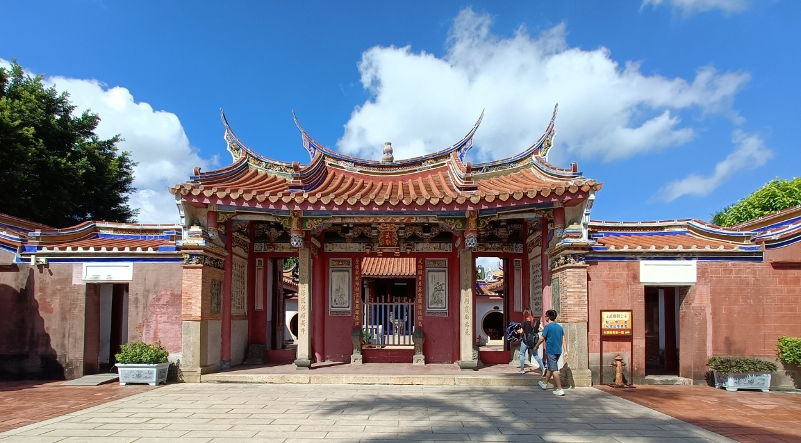

景點介紹
【鹿港文武廟】
「鹿港文武廟位於彰化縣鹿港鎮，是一座結合文教與武德精神的歷史建築，主要祭祀文聖孔子與武聖關公。
廟宇具有濃厚的傳統儒家文化氛圍，也是鹿港地區重要的文化與信仰中心之一。
📜 歷史背景
- ⌛ 創建時間：清朝乾隆年間（約18世紀中葉）建造，最初作為地方士子祭孔及讀書求仕的場所。
- 🗡 武廟部分：主祀關聖帝君（關公），象徵忠義精神，香火鼎盛。
- 🏮 格局結構：典型傳統三合院形式，融合儒雅與剛毅的氣質，廟前牌樓與廟門雕刻精緻、古色古香。
🙏 文化與信仰活動
- 📚 孔子誕辰祭典：每年農曆八月廿七日舉行隆重的釋奠典禮，紀念孔子對教育的貢獻。
- ⚔️ 關聖帝君誕辰：信眾會在每年特定節日供奉關公，祈求忠誠與正義庇佑。
🌟 參觀亮點
- 📸 適合喜歡古蹟、文史的遊客深入了解台灣儒道文化。
- 🧧 可感受融合文與武、儒與義的廟宇氛圍，是兼具教育與信仰功能的場所。